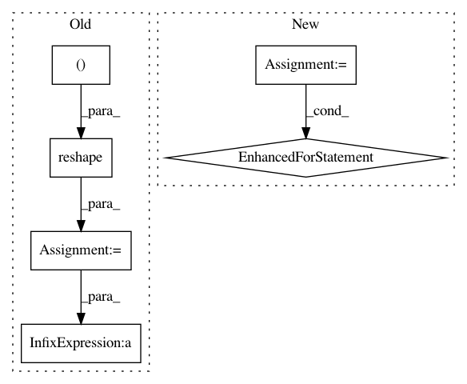

090944e816fd3ff8e861fba4452851e0a901491d,scripts/language_model/large_word_language_model.py,,train,#,193
Before Change
with autograd.record():
for j, (X, y, m, s, h) in enumerate(zip(data, target, mask, sample, hiddens)):
output, h, new_target = model(X, y, h, s)
output = output.reshape((-3, -1))
new_target = new_target.reshape((-1,))
l = loss(output, new_target) * m.reshape((-1,))
Ls.append(l/args.batch_size)
hiddens[j] = h
autograd.backward(Ls)
After Change
for _, batch in enumerate(zip(data, target, mask, sample, hiddens)):
parallel.put(batch)
for _ in range(len(data)):
hidden, ls = parallel.get()
// hidden states are ordered by context id
index = context.index(hidden[0].context)
hiddens[index] = hidden
Ls.append(ls)
// prefetch the next batch of data
try:
data, target, mask, sample = next(train_data_iter)
except StopIteration:
has_next = False
In pattern: SUPERPATTERN
Frequency: 3
Non-data size: 6
Instances
Project Name: dmlc/gluon-nlp
Commit Name: 090944e816fd3ff8e861fba4452851e0a901491d
Time: 2019-01-28
Author: linhaibin.eric@gmail.com
File Name: scripts/language_model/large_word_language_model.py
Class Name:
Method Name: train
Project Name: dmlc/gluon-cv
Commit Name: ee602b6f68f0bdd19f449a86955697f8f0a2d54c
Time: 2019-09-21
Author: yizhu59@gmail.com
File Name: gluoncv/data/transforms/video.py
Class Name: VideoNormalize
Method Name: forward
Project Name: chainer/chainercv
Commit Name: d37d08d9b2a806b3345fba41711c0d517b92a65c
Time: 2017-06-15
Author: yuyuniitani@gmail.com
File Name: chainercv/links/model/vgg/vgg16.py
Class Name: VGG16Layers
Method Name: predict